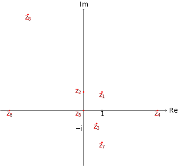

11 Série 2
Exercice 11.1
Écrivez les nombres complexes ci-dessous sous forme polaire. Identifiez par la suite leur module, leur argument principal et représentez-les dans le plan complexe.
- \(z_1=1+\textrm{i}\)
- \(z_2=\textrm{i}\)
- \(z_3=\tfrac{\sqrt{2}}{2}-\textrm{i}\tfrac{\sqrt{2}}{2}\)
- \(z_4=4\)
- \(z_5=0\)
- \(z_6=-4\)
- \(z_7=1-\textrm{i}\sqrt{3}\)
- \(z_8=-3+3\textrm{i}\sqrt{3}\)
Pour trouver le module d’un nombre complexe \(z=a+b\textrm{i}\), où \(a,b\in\mathbb{R}\), nous utilisons la définition, c’est-à-dire que \(|z|=\sqrt{a^2+b^2}\). Pour trouver l’argument principal, on trouve d’abord un de ses arguments, puis, au besoin, on ajoute (ou soustrait) à ce nombre un multiple de \(2\pi\) approprié pour avoir un nombre dans l’intervalle \(]-\pi,\pi]\). Lorsque ces nombres sont déterminés, on est en mesure d’écrire la forme polaire. C’est ainsi qu’on obtient:
Forme cartésienne: \(1+\textrm{i}\),
Module: \(\sqrt{2}\),
Argument principal: \(\frac{\pi}{4}\),
Forme polaire: \(\sqrt{2}\left(\cos\left(\frac{\pi}{4}\right)+\textrm{i}\sin\left(\frac{\pi}{4}\right)\right)\).
Forme cartésienne: \(\textrm{i}\),
Module: \(1\),
Argument principal: \(\frac{\pi}{2}\),
Forme polaire: \(\cos\left(\frac{\pi}{2}\right)+\textrm{i}\sin\left(\frac{\pi}{2}\right)\).
Forme cartésienne: \(\frac{\sqrt{2}}{2}-\textrm{i}\frac{\sqrt{2}}{2}\),
Module: \(1\),
Argument principal: \(-\frac{\pi}{4}\),
Forme polaire: \(\cos\left(-\frac{\pi}{4}\right)+\textrm{i}\sin\left(-\frac{\pi}{4}\right)\).
Forme cartésienne: \(4\),
Module: \(4\), Argument principal: \(0\),
Forme polaire: \(4\left(\cos\left(0\right)+\textrm{i}\sin\left(0\right)\right)\).
Forme cartésienne: \(0\),
Module: \(0\),
Argument principal: Indéfini,
Forme polaire: Indéfinie.
Forme cartésienne: \(-4\),
Module: \(4\),
Argument principal: \(\pi\),
Forme polaire: \(4\left(\cos\left(\pi\right)+\textrm{i}\sin\left(\pi\right)\right)\).
Forme cartésienne: \(1-\textrm{i}\sqrt{3}\),
Module: \(2\),
Argument principal: \(-\frac{\pi}{3}\),
Forme polaire: \(2\left(\cos\left(-\frac{\pi}{3}\right)+\textrm{i}\sin\left(-\frac{\pi}{3}\right)\right)\).
Forme cartésienne: \(-3+3\textrm{i}\sqrt{3}\),
Module: \(6\),
Argument principal: \(\frac{5\pi}{6}\),
Forme polaire: \(6\left(\cos\left(\frac{2\pi}{3}\right)+\textrm{i}\sin\left(\frac{2\pi}{3}\right)\right)\).
Voici la représentation dans le plan complexe des nombres dont il est question dans cet exercice.

Exercice 11.2
Donnez la forme cartésienne et la forme polaire des nombres complexes ci-dessous.
- \((1-\textrm{i})^{12}\)
- \(\dfrac{(1+\textrm{i})^{12}}{(1-\textrm{i})^8}\)
- \(|4+5\textrm{i}|\)
- \((1-\textrm{i}\sqrt{3})^{10}\cdot 9\textrm{i}\)
Nous avons que \(1-\textrm{i}=\sqrt{2}\left(\cos\left(-\frac{\pi}{4}\right)+\textrm{i}\cos\left(-\frac{\pi}{4}\right)\right)\). Ainsi, le module du nombre \((1-\textrm{i})^{12}\) sera \((\sqrt{2})^{12}=2^6\), et un de ses arguments est \(-\frac{\pi}{4}\cdot 12=-3\pi\). L’argument principal est donc \(\pi\). Cela nous permet finalement d’écrire \[(1-\textrm{i})^{12}=\underbrace{2^6(\cos\pi+\textrm{i}\sin\pi)}_{\text{forme~polaire}}=\underbrace{-2^6}_{\text{forme cartsienne}}~.\]
À partir de la forme polaire de \(1-\textrm{i}\) et \(1+\textrm{i}\), on trouve que \((1+\textrm{i})^{12}=-2^6\) et \((1-\textrm{i})^8=2^4.\) Ainsi, \[\frac{(1+\textrm{i})^{12}}{(1-\textrm{i})^8}=\frac{-2^6}{2^4}=\underbrace{-4}_{\text{forme cartsienne}}=\underbrace{4(\cos\pi+\textrm{i}\sin\pi)}_{\text{forme~polaire}}.\]
Remarquons d’abord que \(|4+5\textrm{i}|=\sqrt{41}\). Le nombre est donc situé sur la partie de l’axe réel où les nombres sont positifs, de telle sorte que son argument est \(0\). Aussi, comme la notion de module pour les nombres complexes se confond avec celle de valeur absolue dans le cas des nombres réels, on en déduit que le module du nombre considéré est \(\sqrt{41}\). Ainsi, la forme cartésienne est \(\sqrt{41}\), et la forme polaire \(\sqrt{41}(\cos 0+\textrm{i}\sin 0)\).
Le nombre \(1-\textrm{i}\sqrt{3}\) a pour module \(2\) et pour argument principal \(-\frac{\pi}{3}\). Ainsi, \((1-\textrm{i}\sqrt{3})^{10}\) a pour module \(2^{10}\) et \(\frac{2\pi}{3}\) comme argument principal. De même, le nombre \(9\textrm{i}\) a pour module \(9\) et pour argument principal \(\frac{\pi}{2}\). Le produit de ces deux nombres est donc le nombre complexe ayant pour module \(2^{10}\cdot 9 = 9216\), et pour argument \(\frac{\pi}{2}+\frac{2\pi}{3}=\frac{7\pi}{6}\equiv -\frac{5\pi}{6}~\pmod{2\pi}\). Ainsi, \[\begin{align*} (1-\textrm{i}\sqrt{3})^{10}\cdot 9i&=\underbrace{9216\left(\cos\left(-\frac{5\pi}{6}\right)+\textrm{i}\sin\left(-\frac{5\pi}{6}\right)\right)}_{\text{forme~polaire}}\\ &=\underbrace{-4608\sqrt{3}-4608\textrm{i}~.}_{\text{forme cartsienne}} \end{align*}\]
Exercice 11.3
Utilisez la formule de De Moivre pour démontrer les identités trigonométriques ci-dessous.
- \(\cos(2\theta)=\cos^2(\theta)-\sin^2(\theta)\)
- \(\sin(2\theta)=2\sin(\theta)\cos(\theta)\)
- \(\cos^2(\theta)=\frac{1}{2}(1+\cos(2\theta))\)
- \(\cos^4(\theta)=\frac{1}{8}\left(3+4\cos(2\theta)+\cos(4\theta)\right)\)
D’après l’identité de De Moivre, nous avons que \[(\cos\theta+\textrm{i}\sin\theta)^2=\cos 2\theta+\textrm{i}\sin 2\theta.\] Comme \((\cos\theta+\textrm{i}\sin\theta)^2=\cos^2\theta-\sin^2\theta+\textrm{i}(2\sin\theta\cos\theta),\) on en déduit que \[\cos^2\theta-\sin^2\theta+\textrm{i}(2\sin\theta\cos\theta)=\cos 2\theta+\textrm{i}\sin 2\theta.\] Puis, en égalant parties réelle et imaginaire, nous obtenons les identités (a) et (b).
Pour l’identité (c), il suffit d’observer que puisque \(\cos 2\theta=\cos^2\theta-\sin^2\theta\) et que \(\sin^2\theta=1-\cos^2\theta\), alors \(\cos 2\theta=2\cos^2\theta-1.\) En isolant \(\cos^2\theta\) dans la dernière expression, on obtient le résultat cherché.
En élevant au carré l’identité (c), on obtient que \[\cos^4\theta=\frac{1}{4}\left(1+2\cos 2\theta+\cos^2 2\theta\right).\] Aussi, en remplaçant \(\theta\) par \(2\theta\) dans l’identité (c), on trouve que \[\cos^2 2\theta=\frac{1+\cos 4\theta}{2}.\] Cette dernière expression, lorsque remplacée dans la première, nous donne l’identité cherchée. On peut aussi utiliser l’identité de De Moivre pour \(n=4\).
Exercice 11.4
Chuck et Norris ne s’entendent pas sur une identité trigonométrique. Chuck prétend que \[\cos(2\theta)=2\cos^2(\theta)-1,\] alors que Norris affirme que \[\cos(2\theta)=1-2\sin^2(\theta).\] Qui a raison? Justifiez.
Chuck et Norris ont tous les deux raison. En effet, en considérant l’identité \[\cos(2\theta)=\cos^2(\theta)-\sin^2(\theta)\] qui a été démontrée à l’Exercice 11.3, de même que l’identité fondamentale \[\cos^2(\theta)+\sin^2(\theta)=1,\] on obtient que \(\cos^2(\theta)=1-\sin^2(\theta)\) et \(\sin^2(\theta)=1-\cos^2(\theta)\). En substituant l’expression pour \(\cos^2(\theta)\) dans l’équation \(\cos(2\theta)=\cos^2(\theta)-\sin^2(\theta)\) on obtient la version de Norris. En substituant l’expression pour \(\sin^2(\theta),\) on obtient celle de Chuck.
Exercice 11.5
En vous reportant au cercle trigonométrique, déterminez la valeur exacte des quantités ci-dessous.
- \(\sin(8\pi)\)
- \(\sin\left(\frac{\pi}{2}\right)\)
- \(\sin\left(\frac{\pi}{3}\right)\)
- \(\sin\left(\frac{\pi}{6}\right)\)
- \(\cos\left(\frac{7\pi}{6}\right)\)
- \(\tan(8\pi)\)
- \(\tan\left(\frac{\pi}{2}\right)\)
- \(\sec\left(\frac{\pi}{3}\right)\)
- \(\sin\left(\frac{-5\pi}{6}\right)\)
- \(\cos(2012\pi)\)
- \(\sin(8\pi)=0\)
- \(\sin\left(\frac{\pi}{2}\right)=1\)
- \(\sin\left(\frac{\pi}{3}\right)=\frac{\sqrt{3}}{2}\)
- \(\sin\left(\frac{\pi}{6}\right)=\frac{1}{2}\)
- \(\cos\left(\frac{7\pi}{6}\right)=-\frac{\sqrt{3}}{2}\)
- \(\tan(8\pi)=0\)
- \(\tan\left(\frac{\pi}{2}\right)\) est une expression qui n’est pas définie.
- \(\sec\left(\frac{\pi}{3}\right)=2\)
- \(\sin\left(\frac{-5\pi}{6}\right)=-\frac{1}{2}\)
- \(\cos(2012\pi)=1\)
Exercice 11.6
À partir de l’identité trigonométrique de Chuck de l’Exercice 11.4, on montre facilement l’identité trigonométrique \[\cos^2(\theta)=\frac{1+\cos(2\theta)}{2}.\] En utilisant cette dernière, déterminez la valeur exacte de \(\cos\left(\frac{\pi}{12}\right)\).
Si nous posons \(\theta=\frac{\pi}{12}\) dans l’identité et qu’on utilise le fait que \(\cos\left(\frac{\pi}{6}\right)=\frac{\sqrt{3}}{2}\), on obtient l’équation \[\cos^2\left(\frac{\pi}{12}\right)=\frac{1+\frac{\sqrt{3}}{2}}{2}=\frac{2+\sqrt{3}}{4}.\] Ainsi, \[\cos\left(\frac{\pi}{12}\right)=\frac{1}{2}\sqrt{2+\sqrt{3}}\textrm{~~ou~~}-\frac{1}{2}\sqrt{2+\sqrt{3}}.\] Comme l’angle \(\frac{\pi}{12}\) se situe dans le premier quadrant, nous avons que \(\cos\left(\frac{\pi}{12}\right)>0\), d’où la réponse : \[\cos\left(\frac{\pi}{12}\right)=\frac{1}{2}\sqrt{2+\sqrt{3}}.\]
Exercice 11.7
En vous servant de ce qui a été fait à l’Exercice 11.6, déterminez la valeur exacte de \(\sin\left(\frac{13\pi}{12}\right)\)
Remarquons dans un premier temps que \(\sin\frac{13\pi}{12}=-\sin\frac{\pi}{12}\). Pour s’en convaincre il suffit de se référer au cercle trigonométrique. Ensuite, en se basant sur l’identité fondamentale \(\cos^2\theta+\sin^2\theta=1\), nous avons que \[\sin^2\left(\frac{\pi}{12}\right)=1-\cos^2\left(\frac{\pi}{12}\right)=1-\frac{1}{4}\left(2+\sqrt{3}\right)=\frac{2-\sqrt{3}}{4}.\] Comme \(\sin\left(\frac{\pi}{12}\right)>0\), il suit que \(\sin\left(\frac{\pi}{12}\right)=\frac{\sqrt{2-\sqrt{3}}}{4}.\) De cela nous pouvons conclure que \(\sin\left(\frac{13\pi}{12}\right)=-\frac{\sqrt{2-\sqrt{3}}}{4}\).
Exercice 11.8
Si vous demandez à WolframAlpha de calculer la valeur exacte de \(\cos\left(\frac{\pi}{12}\right)\), il vous retourne \[\frac{1+\sqrt{3}}{2\sqrt{2}}.\] Or, ce n’est pas la réponse que nous avons obtenue à l’Exercice 11.6. Que se passe-t-il?
Les nombres peuvent s’écrire de plusieurs façons. Par exemple, \(\frac{14}{2}\) est le même nombre que \(7\), et \(\frac{1}{\sqrt{2}}\) est le même que \(\frac{\sqrt{2}}{2}\) ou encore \(\cos\left(\frac{\pi}{4}\right)\). Pour montrer que nous et WolframAlpha avons raison concernant la valeur exacte de \(\cos\left(\frac{\pi}{12}\right)\), il nous faut établir l’égalité ci-dessous : \[\frac{1}{2}\sqrt{2+\sqrt{3}}=\frac{1+\sqrt{3}}{2\sqrt{2}}.\] Les deux membres étant positifs, ils seront égaux si et seulement si leur carré sont égaux. Il nous faut donc montrer que \[\frac{2+\sqrt{3}}{4}=\frac{1+2\sqrt{3}+3}{8},\] égalité qui est bien sûr vérifiée. Notons que si vous avez utilisé votre calculatrice pour obtenir une approximation des deux nombres et pensez avoir montré que ceux-ci était forcément égaux, et bien vous êtes dans l’erreur. Un tel raisonnement nous amènerait à croire que \(3,1415927=3,1415927000001\), ce qui n’est bien sûr pas le cas.
Exercice 11.9
Exprimez les racines carrées des nombres complexes ci-dessous sous forme cartésienne.
- \(16\)
- \(-16\)
- \(\textrm{i}\)
- \(0\)
- \(-24-10\textrm{i}\)
- \(\sqrt{3}+\textrm{i}\)
- \(\tan\left(\frac{\pi}{3}\right)\)
Les deux racines sont \(-4\) et \(4\).
Les deux racines sont \(-4\textrm{i}\) et \(4\textrm{i}\).
On veut trouver \(z=x+\textrm{i}y\), avec \(x,y\in\mathbb{R}\), tel que \(z^2=\textrm{i}\). Ainsi, on doit avoir que \(x^2-y^2+2xy\,\textrm{i}=\textrm{i}\). En égalant parties réelle et imaginaire, on obtient les deux équations \(x^2-y^2=0\) et \(2xy=1\). La première de ces équations implique que \(x=y\) ou \(x=-y\). Si \(x=y\), en remplaçant dans la deuxième équation, on trouve que \(x=\pm\frac{\sqrt{2}}{2}\). Si \(x=-y\), alors \(-2x^2=1\), ce qui est impossible puisque \(x\in\mathbb{R}\). Par conséquent, les deux racines carrées de \(\textrm{i}\) sont \[\begin{eqnarray*} z_1=\frac{\sqrt{2}}{2}+\textrm{i}\frac{\sqrt{2}}{2},\\ z_2=-\frac{\sqrt{2}}{2}-\textrm{i}\frac{\sqrt{2}}{2}. \end{eqnarray*}\]
Rappelons d’abord que le produit de deux termes est nul si et seulement si au moins un des termes est nul. Ainsi, affirmer que \(z\) est un racine carrée de \(0\) signifie que \(z\cdot z=0\), ce qui n’est le cas que lorsque \(z=0\). Par conséquent, le nombre \(0\) n’a qu’une seule racine carrée, à savoir \(0\).
On veut trouver \(z=x+\textrm{i}\,y\), avec \(x,y\in\mathbb{R}\), tel que \(z^2=-24-10\textrm{i}\). Ainsi, on doit avoir que \(x^2-y^2+2xy\,\textrm{i}=-24-10\textrm{i}\). En égalant parties réelle et imaginaire, on obtient les deux équations \(x^2-y^2=-24\) et \(2xy=-10\). Puisque le carré d’un nombre réel donne un nombre réel, il suit que \(y\neq 0\). Cela nous permet de diviser par \(y\) et d’écrire \(x=-\frac{5}{y}\). En remplaçant dans l’équation \(x^2-y^2=-24\), nous obtenons que \[\frac{25}{y^2}-y^2=-24.\] Cela nous amène à résoudre l’équation \(y^4-24y^2-25=0\). On peut y arriver en posant \(u=y^2\). On obtient ainsi l’équation quadratique \(u^2-24u-25=0\), dont les solutions sont \(25\) et \(-1\). Comme \(u\) est le carré de \(y\), un nombre réel, on doit rejeter la solution \(u=-1\). Par conséquent, \(y^2=25\), d’où \(y=\pm 5\). Si \(y=5\), alors \(x=-1\) et si \(y=-5\), \(x=1\). Par conséquent, les deux racines sont \(z_1=-1+5\textrm{i}\) et \(z_2=1-5\textrm{i}\).
Soit \(\theta\) l’argument principal du nombre \(\sqrt{3}+\textrm{i}\). On observe que \(\sqrt{3}+\textrm{i}\) est situé dans le premier quadrant, et que \(\tan\theta=\frac{1}{\sqrt{3}}=\frac{\sqrt{3}}{3}\). Par conséquent, \(\theta=\frac{\pi}{6}\). Comme le module de \(\sqrt{3}+\textrm{i}\) est \(2\), sa forme polaire est donnée par \(2\left(\cos\frac{\pi}{6}+\textrm{i}\sin\frac{\pi}{6}\right).\) Ainsi, Les deux racines carrées de \(\sqrt{3}+\textrm{i}\) sont \[z_k=2^{1/2}\left(\cos\left(\frac{\frac{\pi}{6}+2k\pi}{n}\right)+i\sin\left(\frac{\frac{\pi}{6}+2k\pi}{n}\right)\right),\] où \(k\in\{0,1\}\). Cela donne lieu aux racines \[\begin{align*} z_1&=\sqrt{2}\left(\cos\frac{\pi}{12}+\textrm{i}\sin\frac{\pi}{12}\right)=\frac{1+\sqrt{3}}{2}+\textrm{i}\left(\frac{-1+\sqrt{3}}{2}\right),\\ z_2&=\sqrt{2}\left(\cos\frac{13\pi}{12}+\textrm{i}\sin\frac{13\pi}{12}\right)=\frac{1+\sqrt{3}}{2}+\textrm{i}\left(\frac{-1+\sqrt{3}}{2}\right). \end{align*}\]
Nous avons que \(\tan\left(\frac{\pi}{3}\right)=\sqrt{3}\). C’est un nombre réel positif, il possède donc deux racines carrées, à savoir \[\begin{align*} z_1&=\sqrt{\sqrt{3}}=\sqrt[4]{3},\\ z_2&=-\sqrt{\sqrt{3}}=-\sqrt[4]{3}. \end{align*}\]
Exercice 11.10
Pour les valeurs de \(n\) appartenant à l’ensemble \(\{1,2,3,4,5,6\}\), trouvez, sous forme cartésienne, les racines \(n^{\textrm{ième}}\) de l’unité et représentez-les dans le plan complexe. Pour le cas \(n=5\), utilisez WolframAlpha pour évaluer les fonctions sinus et cosinus.
Cas où \(n=1\)
Il faut résoudre \(z^1=1\), ce qui implique que \(z_0=1\) est l’unique racine \(1^{\textrm{ième}}\) de l’unité.
Cas où \(n=2\)
Il faut résoudre \(z^2=1\), ce qui implique que \(z^2-1=0\), ou encore \((z-1)(z+1)=0\). Les deux solutions sont donc \(z_0=1\) et \(z_1=-1\).
Cas où \(n\geq 3\)
Il est plus simple de passer par la forme polaire ou exponentielle. En effet, si \(w=r(\cos\theta+\textrm{i}\sin\theta)\), alors les \(n\) racines \(n^{\textrm{ième}}\) de \(w\) sont données par \[z_k=r^{1/n}\left(\cos\left(\frac{\theta+2k\pi}{n}\right)+\textrm{i}\sin\left(\frac{\theta+2k\pi}{n}\right)\right),\] où \(k\in\{0,1,\ldots,n-1\}\). Dans cet exercice, on s’intéresse aux racine de l’unité, c’est-à-dire aux solutions de l’équation \(z^n=1\) pour différentes valeurs de \(n\). Sous forme polaire, le nombre \(1\) s’écrit comme étant \(1\cdot(\cos 0 +\textrm{i}\sin 0)\). Le module des racines \(n^{\textrm{ième}}\) sera donc \(1\), quelle que soit la valeur de \(n\). Ce qui va changer, en fonction de \(n\), ce sont les arguments des racines.
Pour \(n=3\), les trois arguments sont \(\frac{0+2k\pi}{n}\) où \(k\in\{0,1,2\}\), ce qui nous donne les arguments (pas nécessairement principaux) \(0, \frac{2\pi}{3}\) et \(\frac{4\pi}{3}\). Ainsi, \[\begin{align*} z_0&=1\cdot(\cos 0 +\textrm{i}\sin 0)=1,\\ z_1&=1\cdot\left(\cos \frac{2\pi}{3} +\textrm{i}\sin \frac{2\pi}{3}\right) = -\frac{1}{2}+\textrm{i}\frac{\sqrt{3}}{2},\\ z_2&=1\cdot\left(\cos \frac{4\pi}{3} +\textrm{i}\sin \frac{4\pi}{3}\right) = -\frac{1}{2}-\textrm{i}\frac{\sqrt{3}}{2}. \end{align*}\]
Pour \(n=4\), les quatre arguments sont \(\frac{0+2k\pi}{n}\) où \(k\in\{0,1,2,3\}\), ce qui nous donne les arguments (pas nécessairement principaux) \(0, \frac{\pi}{2},\pi\) et \(\frac{3\pi}{2}\). Ainsi, \[\begin{align*} z_0&=1\cdot(\cos 0 +\textrm{i}\sin 0)=1,\\ z_1&=1\cdot\left(\cos \frac{\pi}{2} +\textrm{i}\sin \frac{\pi}{2}\right) = \textrm{i},\\ z_2&=1\cdot\left(\cos \pi+\textrm{i}\sin \pi\right) = -1,\\ z_3&=1\cdot\left(\cos \frac{3\pi}{2} +\textrm{i}\sin \frac{3\pi}{2}\right) = -\textrm{i}. \end{align*}\]
Pour \(n=5\), les cinq arguments sont \(\frac{0+2k\pi}{n}\) où \(k\in\{0,1,2,3,4\}\), ce qui nous donne les arguments (pas nécessairement principaux) \(0, \frac{2\pi}{5},\frac{4\pi}{5},\frac{6\pi}{5}\), et \(\frac{8\pi}{5}\). Ainsi, \[\begin{align*} z_0&=1\cdot(\cos 0 +\textrm{i}\sin 0)=1,\\ z_1&=1\cdot\left(\cos \frac{2\pi}{5} +\textrm{i}\sin \frac{2\pi}{5}\right) = \frac{1}{4}(-1+\sqrt{5})+\textrm{i}\sqrt{\frac{5}{8}+\frac{\sqrt{5}}{8}},\\ z_2&=1\cdot\left(\cos \frac{4\pi}{5} +\textrm{i}\sin \frac{4\pi}{5}\right) = -\frac{1}{4}(1+\sqrt{5})+\textrm{i}\sqrt{\frac{5}{8}-\frac{\sqrt{5}}{8}},\\ z_3&=1\cdot\left(\cos \frac{6\pi}{5} +\textrm{i}\sin \frac{6\pi}{5}\right) = -\frac{1}{4}(1+\sqrt{5})-\textrm{i}\sqrt{\frac{5}{8}-\frac{\sqrt{5}}{8}},\\ z_4&=1\cdot\left(\cos \frac{8\pi}{5} +\textrm{i}\sin \frac{8\pi}{5}\right) = \frac{1}{4}(-1+\sqrt{5})-\textrm{i}\sqrt{\frac{5}{8}+\frac{\sqrt{5}}{8}}. \end{align*}\]
Ici, il n’est pas simple de déterminer la valeur exacte du sinus et du cosinus de la plupart des arguments. On peut facilement y parvenir à l’aide de Maple, ou encore de WolframAlpha. on peut déterminer ces quantités avec WolframAlpha.
Pour \(n=6\), les six arguments sont \(\frac{0+2k\pi}{n}\) où \(k\in\{0,1,2,3,4,5\}\), ce qui nous donne les arguments (pas nécessairement principaux) \(0,\frac{\pi}{3},\frac{2\pi}{3},\pi,\frac{4\pi}{3}\), et \(\frac{5\pi}{3}\). Ainsi, \[\begin{align*} z_0&=1\cdot(\cos 0 +\textrm{i}\sin 0)=1,\\ z_1&=1\cdot\left(\cos \frac{\pi}{3} +\textrm{i}\sin \frac{\pi}{3}\right) = \frac{1}{2}+\textrm{i}\frac{\sqrt{3}}{2},\\ z_2&=1\cdot\left(\cos \frac{2\pi}{3} +\textrm{i}\sin \frac{2\pi}{3}\right) = -\frac{1}{2}+\textrm{i}\frac{\sqrt{3}}{2},\\ z_3&=1\cdot\left(\cos \pi+\textrm{i}\sin \pi\right) = -1,\\ z_4&=1\cdot\left(\cos \frac{4\pi}{3} +\textrm{i}\sin \frac{4\pi}{3}\right) = -\frac{1}{2}-\textrm{i}\frac{\sqrt{3}}{2},\\ z_5&=1\cdot\left(\cos \frac{5\pi}{3} +\textrm{i}\sin \frac{5\pi}{3}\right) = \frac{1}{2}-\textrm{i}\frac{\sqrt{3}}{2}. \end{align*}\]